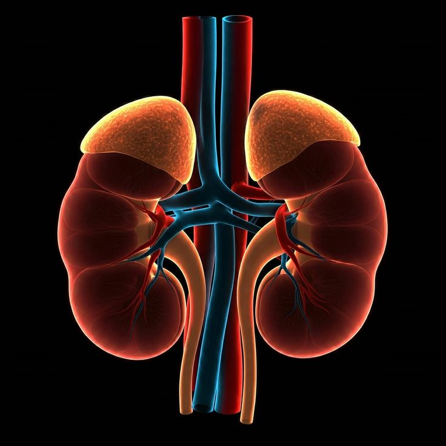

The kidneys are two bean-shaped organs that filter waste and excess water from the blood. They help maintain the body's fluid balance and produce urine.
⬅ Back to AnatomyLocated on both sides of the spine, below the rib cage.
Filters blood, removes waste, balances body fluids, and produces urine.
Your kidneys filter about 50 gallons (around 180 liters) of blood every day.
Kidney Stones
Chronic Kidney Disease
Kidney Infection